✦ UX Case Studies · 2026
Designing clarity into complex systems
Two case studies on turning tangled, high-stakes workflows into guided, trustworthy experiences.
SAP SuccessFactors Payroll · Enterprise UX
AIESEC Brazil · Journey design
Agenda
What we'll cover
US Setup Landscape with BSI
A compliance "hard gate" in SAP SuccessFactors Payroll — redesigned from zero to one so first-time setup feels discoverable and trustworthy.
Minha Jornada Platform
A fragmented AIESEC exchange journey turned into one guided hub for participants and managers — designed and prototyped with AI.
Use the arrow keys (← →) or the controls below to move through the deck.
US Setup Landscape with BSI
SAP SuccessFactors Payroll (USA) · Enterprise UX
Case 01 · Context
Where this lives
The product
SAP SuccessFactors Payroll (USA) — a cloud platform for low-to-mid organizations, built from zero. US payroll is complex and requirement-heavy.
The team
SFPAY, a Scrum team of three squads (Dana, Denali, Logan). In 2026 we entered an acceleration phase — scopes and deadlines far less negotiable: deliver more with less effort.
My role
As UX Designer I turn complex business rules and user needs into flows, interaction models and hi-fi UI aligned with SAP Fiori. I join Agile ceremonies and file usability tickets.
Case 01 · The case
A gate before anything else
Before performing any activity — even hiring — a customer must register their BSI credentials. Payroll depends on BSI for tax calculation, jurisdiction determination and forms processing, so SFPAY simply cannot be used until this setup is complete. The settings are metadata-driven, so the relevant data is already pre-configured at first login.
Make a compliance task feel human
- Hard gate: nothing in payroll works until it's done.
- Discoverable: a back-office task that's easy to find and start.
- Trustworthy: clear feedback on what's saved, active, and pending.
Case 01 · Explore
First exploration — low-fidelity
A multi-step wizard: enter credentials, test them, and review everything in one list.
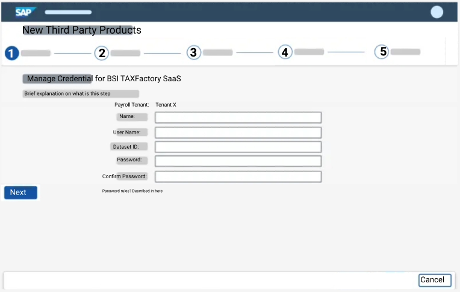
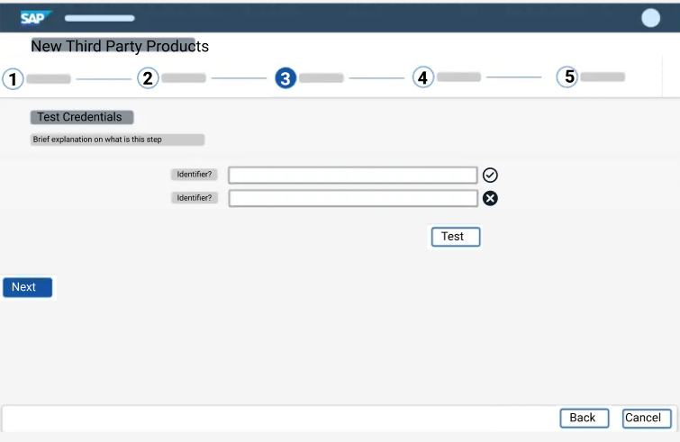
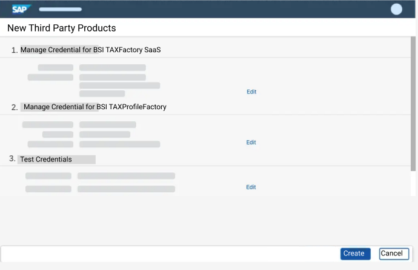
Case 01 · Refine
First high-fidelity attempt
A guided 4-step creation wizard plus a managed list with status and an activation log — fully in SAP Fiori.
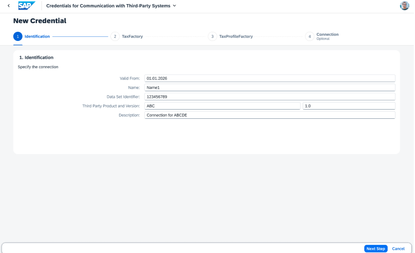
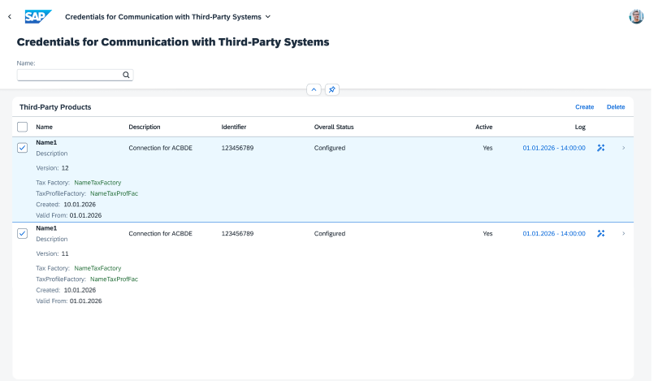
Case 01 · The turning point
A constraint reshaped the design
Talking to developers and external BSI stakeholders turned a heavy build into a single action.
From — create in-app
Rich, multi-step screens to create, test and manage credentials directly inside SFPAY. Costly and complex on the backend — and too heavy for a user's very first step.
To — activate, don't create
Credentials are registered through a form outside the system. When the user logs in to SFPAY, they only need to activate the credential. Simpler backend, simpler first step.
Case 01 · Redesign
One clear place to configure
A single "Configure Communication with Third-Party Systems" entry lists each system with an explicit status — so first-time users always know where to go and what's pending.
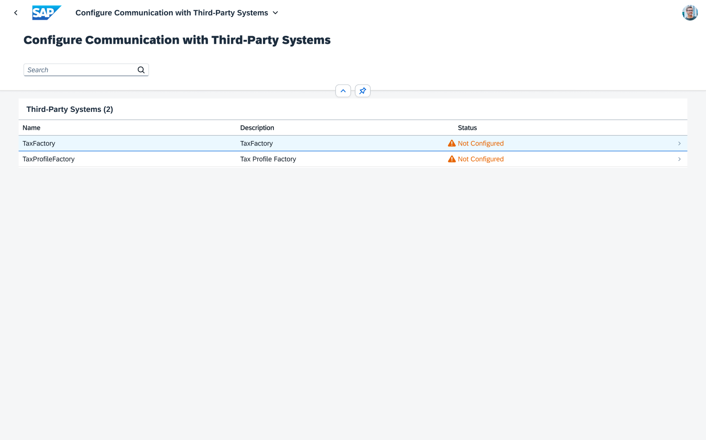
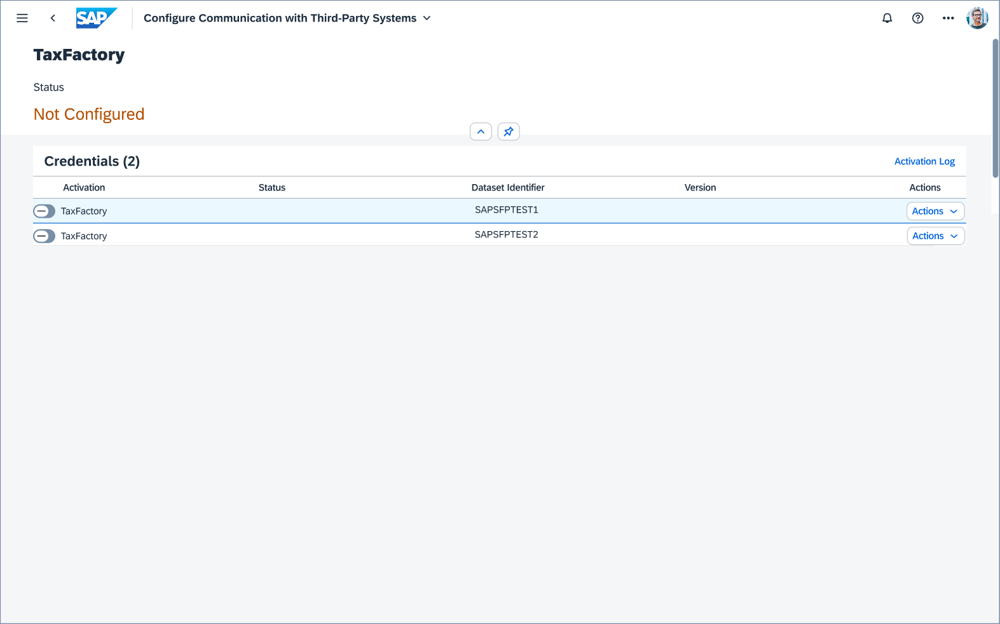
Case 01 · Feedback
Status you can trust
-
Not Configured
The gate is open
Nothing is activated yet — payroll stays blocked and the user knows exactly why.
-
Maintained
Saved & ready
Credentials are saved and validated (Saved / Not Saved per version), awaiting activation.
-
Configured
Live & unblocked
An active credential is live — payroll is unblocked and ready to use.
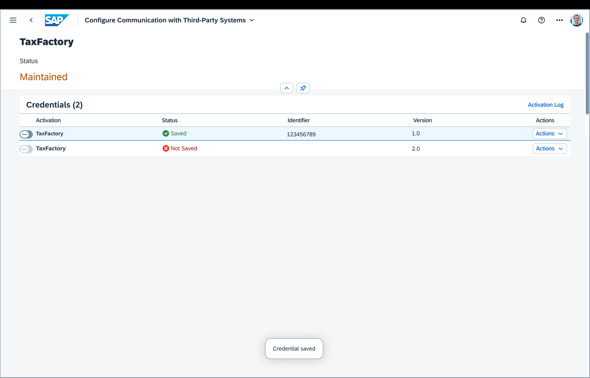
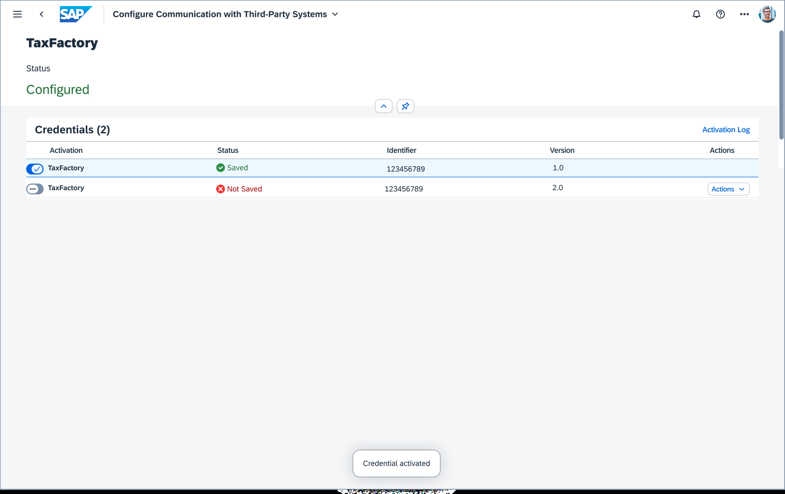
Case 01 · Trust & audit
Safe changes, full traceability
A confirmation guards activation — switching one credential on deactivates the previous — and an activation log records every version and timestamp.
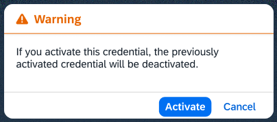
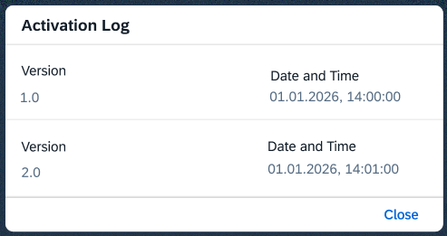
Case 01 · Outcome
A guided, discoverable setup
First-time logins are unblocked and administrators feel confident at every step — all consistent with existing SuccessFactors patterns.
Unblocked first login
A predictable, guided place to configure credentials before payroll begins.
Status you can trust
Explicit progression from Maintained to Configured, with clear feedback.
Built for audit
An activation log for full traceability of every change.
Shipped: the design moved from Figma into active development.
Case 01 · Reflection
Why this case matters to me
Zero to one
I took a screen from nothing to shipped. Seeing what I designed being built was deeply rewarding.
Cross-functional
It spanned many stakeholders — including partners outside SAP — and sharpened how I collaborate with developers.
Design into quality
Mentored by my colleagues, I ran the UX implementation review against Figma and filed bugs and review PRs.
Minha Jornada Platform
AIESEC Brazil · End-to-end journey design
✦ 100% AI-assisted design
Case 02 · Overview
A journey with no map
Minha Jornada helps exchange participants (EPs) and managers navigate the full AIESEC exchange journey in Brazil — a process that was fragmented and hard to follow.
Fragmented & invisible
- No end-to-end visibility or structure across the process.
- Participants felt uncertain about progress and next steps.
- Managers struggled to track engagement and status.
- Critical info scattered across spreadsheets, chats and tools.
Case 02 · Discovery
Listening first: 6 conversations
Before designing, I ran in-depth interviews with exchange participants and CX managers, then affinity-mapped the pain points.
"I never knew what the next step was. I kept messaging my buddy on WhatsApp asking 'and now?'"
Larissa, 21 · EP, Global Volunteer
"My documents were in three different Drives. I re-sent the same passport photo four times."
Rafael, 23 · EP, Global Talent
"I almost missed a deadline because the info was buried in a spreadsheet I didn't know existed."
Marina, 20 · EP, Global Volunteer
"I felt alone. There was no sense of progress — no 'you're 60% there'."
Bruno, 22 · EP, Global Talent
"I manage 15 EPs and track everything by hand. I honestly can't tell who's stuck."
Camila, 24 · Manager CX
"When someone drops out, I usually find out too late. There's no early warning."
Thiago, 25 · Manager CX
Case 02 · Synthesis
What we heard → what to build
Show me where I am
A clear sense of progress and the next step, end to end.
One source of truth
Documents and information in one place — not five.
Warn me in time
Proactive alerts before deadlines, not after they pass.
A cockpit for managers
Pipeline, compliance and risk visible at a glance.
Keep me motivated
Milestones and recognition to sustain engagement.
Case 02 · Solution
One guided journey hub
Minha Jornada replaces a spreadsheet-driven process with a single platform that adapts to each role — one shared, end-to-end view of the exchange.
A step-by-step path
A clear, guided route through the whole exchange, with progress always visible.
- Personal journey
- Checklist per stage
- Badges & XP
- Messages from CX
An operational cockpit
Track pipeline, compliance and exactly what needs attention — all in one place.
- Full pipeline
- Stage view
- Automatic alerts
- Actions per student
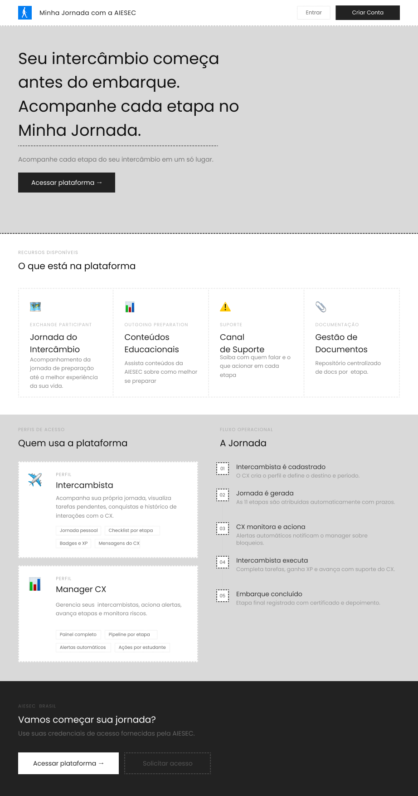
Case 02 · Hi-fi
The journey hub
- Clear hero & CTA — "Your exchange starts before departure."
- What's on the platform — journey, educational content, support, documents.
- Role-based sections — tailored views for participants and managers.
- An 11-stage flow — from registration to completed departure.
Case 02 · Hi-fi
Guided onboarding
The platform adapts from the very first screen: pick your role, then sign in to the right view.
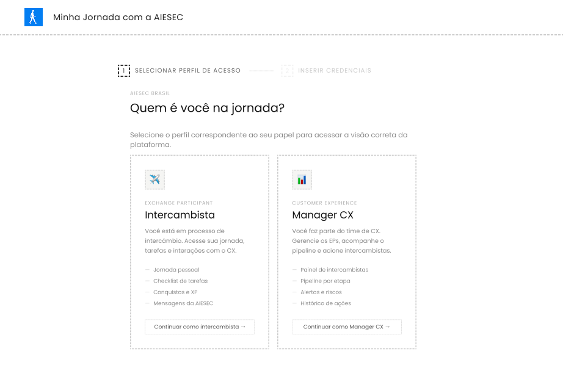
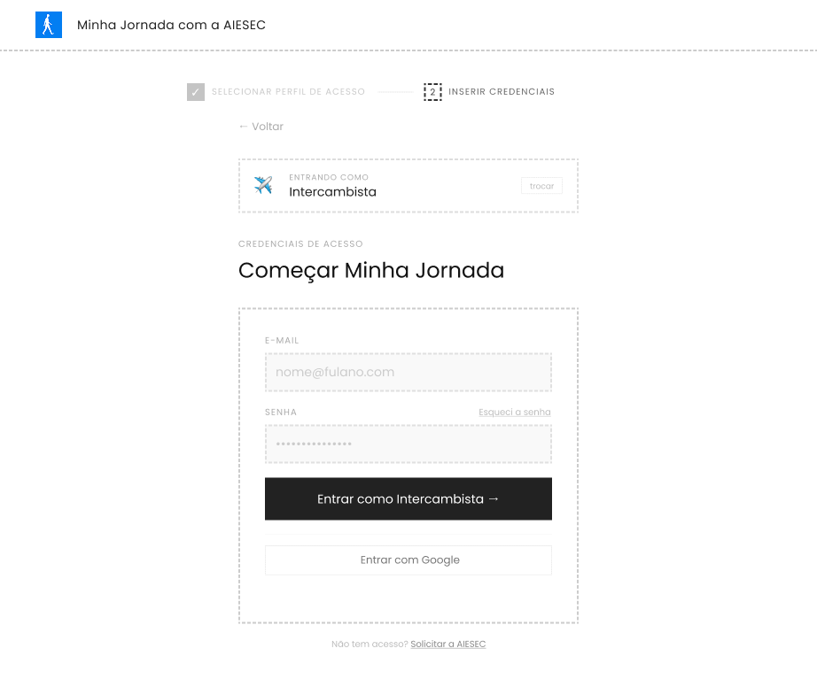
Case 02 · Outcome
From scattered to guided
One end-to-end view
A single hub replaces scattered spreadsheets, chats and tools.
Role-based clarity
Participants see their path; managers get an operational cockpit.
Built fast with AI
Designed and prototyped end-to-end with AI-assisted tools — IA to hi-fi in days.
✦ 100% AI-assisted design (vibe coding)
✦ Thank you
Let's talk
Bruna Demichei Nobre · UX Designer — SAP SuccessFactors Payroll (USA)